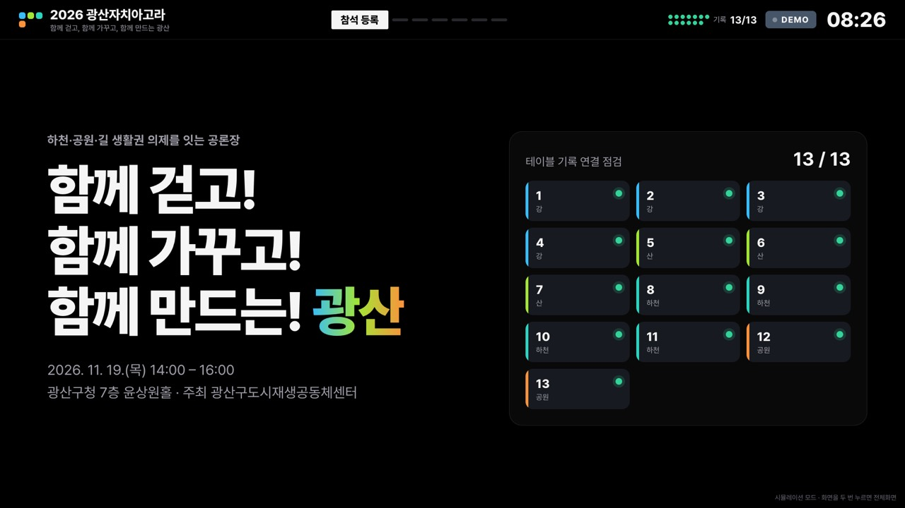
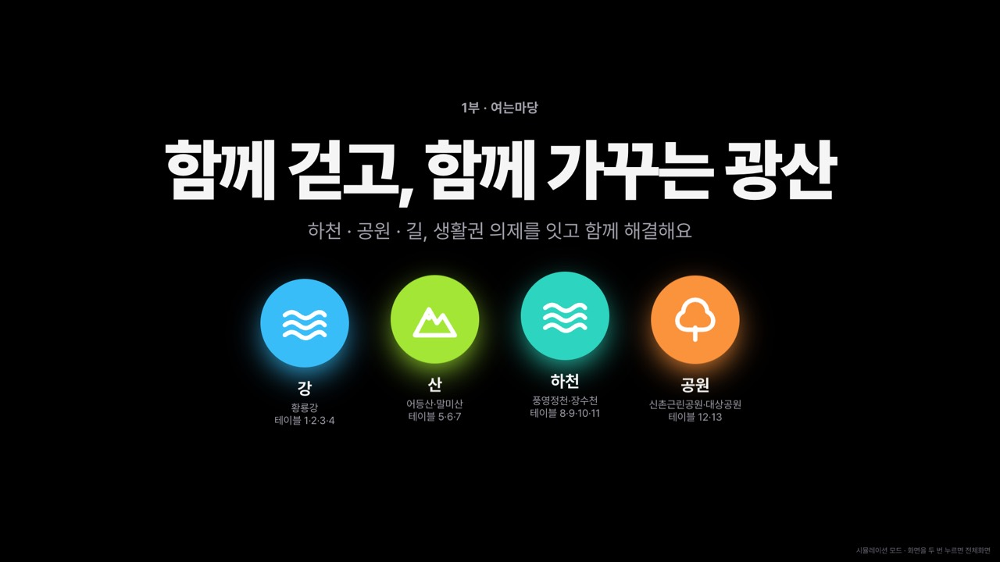
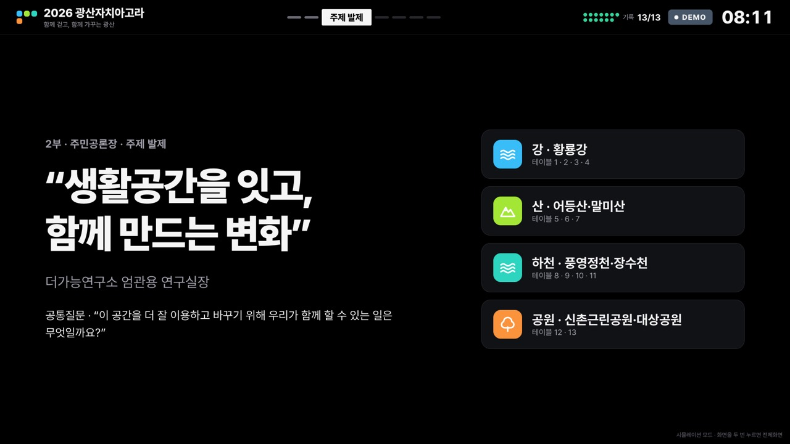

2026 광산자치아고라 · 진행자용 화면 흐름 (V2)
지금 대형 스크린에 무엇이 뜨고,
진행자는 무엇을 하면 되나요
대형 스크린은 관제반이 넘깁니다. 화면이 바뀌면 이 자료의 같은 그림을 찾아 🎤 멘트와 할 일을 보세요. 시각은 진행표 기본값이라 실제 진행에 따라 조금 달라질 수 있어요. 그림은 연습용 예시 데이터라 실제 내용과 다릅니다.

대기 화면 · 오른쪽 「테이블 기록 연결 13/13」
참석 등록13:30
- 테이블 위 QR 카드(③ 투표·⑦ 공감)와 기록자 노트북이 있는지 확인
- 기록자 노트북에서 우리 테이블 문서가 열려 있는지 확인
우리 테이블 번호 칸에 초록 점이 있으면 기록 연결 정상. 빠져 있으면 관제반에 알려 주세요

1부 여는마당 · 4개 주제(강·산·하천·공원)
1부 여는마당14:00
- 사회자 진행. 테이블 진행자는 참가자 자리 안내와 인사
- 우리 테이블 주제를 화면 아이콘 색으로 알려 주면 좋아요
주제별 테이블 번호 · 강 1–4, 산 5–7, 하천 8–11, 공원 12–13

주제 발제 · 공통질문
주제 발제14:20
- 발제를 들으며 우리 테이블에서 이야기할 장소를 떠올리게 해 주세요
- 발제가 끝나면 바로 ① 이용 경험으로 넘어가요
왼쪽 아래 공통질문 · “이 공간을 더 잘 이용하고 바꾸기 위해 우리가 함께 할 수 있는 일은 무엇일까요?”